原文连接:https://www.cnblogs.com/zhouxuejia/p/11875642.html
自己研究了下Eclipse用Maven多模块工程Module开发，跟大家分享一下！
功能模块来分Module，跟java的package类似，一般是按照的功能模块分module，比如：sso/cas/portal/activity/system，具体可根据需要
例如下面一个某系统的module
--module-test-common公共部分
--module-test-picture图片
--module-test-order订单
--module-test-checkout购物车
--module-test-pay支付
--module-test-catory类目
--module-test-product商品
--module-test-price价格
--module-test-account账号
........
现在更多的应该是用这种功能来解耦，module前期可以配置成jar，后期也可以建立独有的页面，独立的站点，通过子域名的方式访问，各个功能模块解耦，趋向微服务架构
1.创建工程项目
步骤：File-->New-->Maven Project
Next
填写GroupId和ArtifactId –> Next
主工程创建完成
上图..
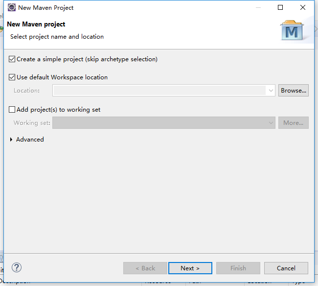
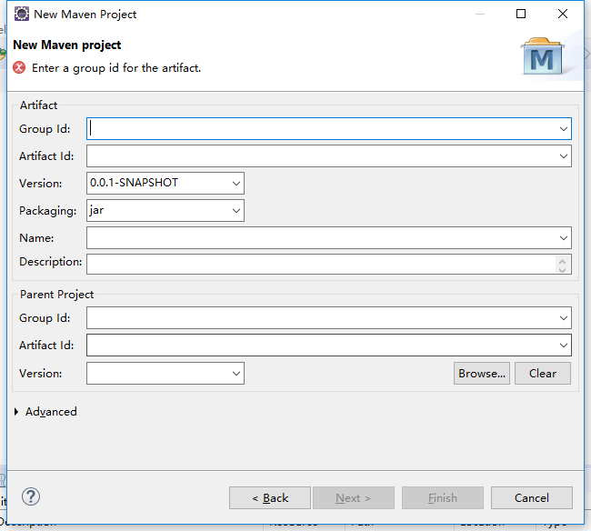
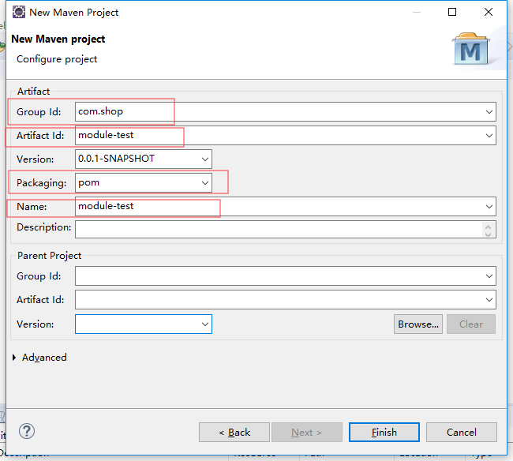
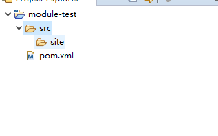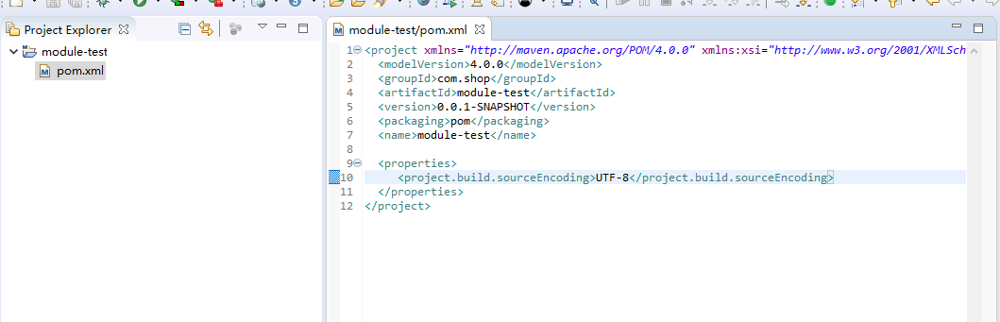
2.创建一个webModule
右击项目选Maven–> NewMaven Module Project –> Module，选中【Create from archetype】，选中【org.apache.maven.archetypes:maven-archetype-webapp】
如果不用快速骨架生成的方式，需要将该module的pom.xml设置为<packaging>war</packaging>
5.png)
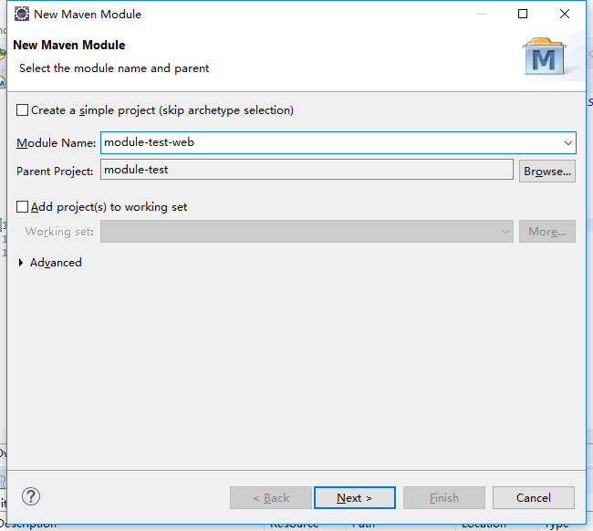
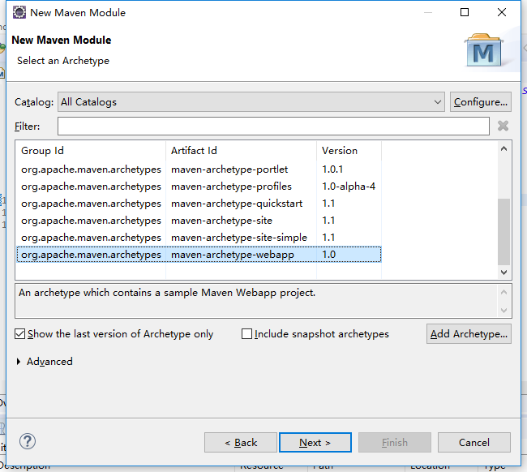
3.创建别的模块，别的模块使用maven-archetype-quickstart
备注：如果不用快速骨架生成的话，则pom.xml需要配置成建好`<packaging>jar</packaging>`
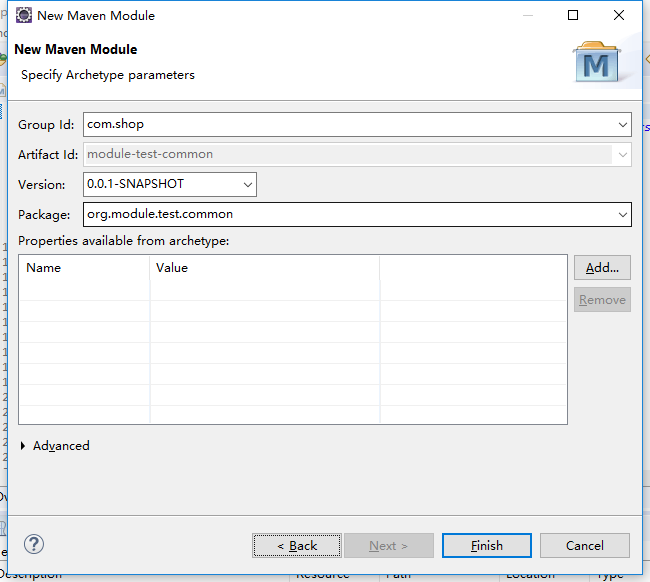
4.部署服务Tomcat
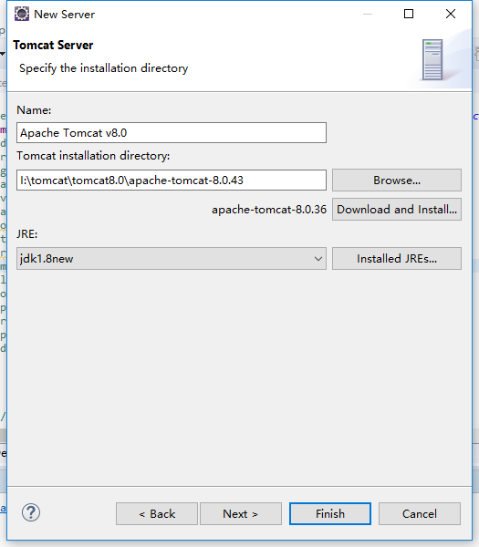
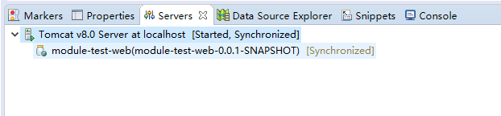
5.运行项目
项目目录如下：
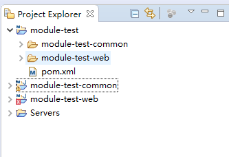
大家有啥问题，欢迎评论！
13.png)